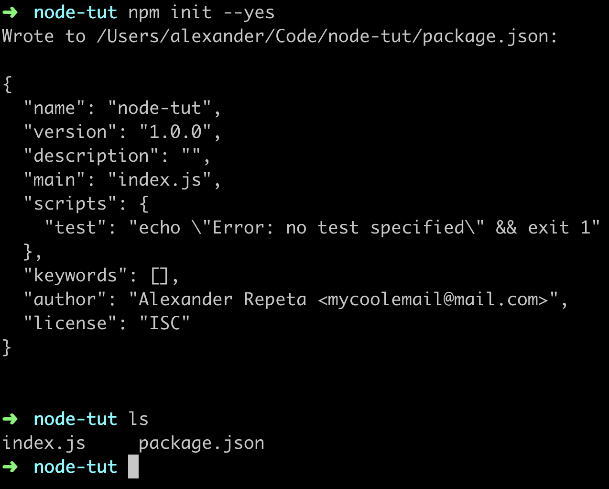
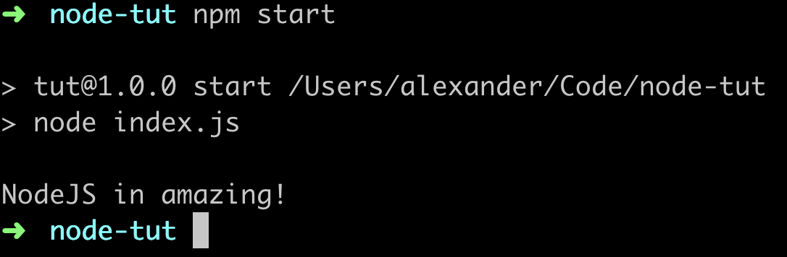

1. Вступ
Щоб використовувати все багатство інструментів (або пакетів) Node.js нам потрібна можливість встановлювати й управляти ними. Для цього створено NPM (node package manager) - пакетний менеджер Node.js. Він встановлює потрібний пакет і надає зручний інтерфейс для роботи з ними.
NPM складається з трьох основних компонентів:
- Сайт npmjs.com — використовується для пошуку і ознайомлення з документацією пакетів.
- Інтерфейс командного рядка (CLI) — запускається з терміналу і надає набір команд для роботи з реєстром і пакетами. Дозволяє створювати скрипти для запуску в терміналі.
- Реєстр пакетів (registry) — велика загальнодоступна база даних інструментів розробки (пакетів).
Пакет (package) — невелика JS-бібліотека, вирішує специфічне завдання.
Пакети пишуть самі розробники і діляться з спільнотою. Такий підхід спрощує життя, тому що не потрібно винаходити колесо, всі колеса вже давно лежать на полицях реєстру і готові до використання.
Пакети абстрагують реалізацію функціоналу, надаючи розробнику зручний інтерфейс. Це робить код чистішим, читабельнішим і дозволяє легше його підтримувати.
2. Команди NPM
Відразу перерахуємо основні команди і будемо послідовно використовувати і розглядати в деталях.
npm init— ініціалізуєnpmі створює файлpackage.jsonnpm install— встановлює всі залежності перераховані вpackage.jsonnpm list --depth=0- виведе в терміналі список локально встановлених
пакетів з номерами їх версій, без залежностейnpm install [package-name]— встановить пакет локально в папкуnode_modulesnpm uninstall [package-name]— видалить пакет встановлений локально і оновитьpackage.jsonnpm startіnpm test— запустить скриптstartабоtest, розташований вpackage.jsonnpm run [custom-script]— запустить кастомний скрипт, розташований вpackage.jsonnpm outdated— використовується для пошуку оновлень, виявить сумісні
версії програмно і виведе список доступних оновленьnpm update— оновить всі пакети до максимально дозволеної версії
3. Ініціалізація проєкта
Кожен проєкт починається зі створення файлу package.json - він відстежує
залежності, містить службову інформацію, дозволяє писати npm-скрипти, і служить
інструкцією при створенні нового проєкту на основі вже готових налаштувань.
Створити файл package.json можна npm-командою init, тим самим Ініціалізувати
проєкт в цій папці.
npm init
Вам буде запропоновано ввести назву проєкту, версію, опис і т. д. Можна просто
натискати Enter, до тих пір, поки не буде створено package.json і розміщений
в папці проєкту.
Щоб не натискати Enter, пропускаючи порожні поля, використовується команда
init з прапором --yes. Прапор - додаткове налаштування для команди.
npm init --yes
Буде створено package.json зі значеннями за замовчуванням. Щоб встановити ці
значення, в терміналі виконайте таку послідовність команди, підставивши своє
ім'я і пошту.
npm config set init.author.name "YOUR_NAME"
npm config set init.author.email "YOUR_EMAIL"

Можна редагувати файл package.json вручну або запустивши npm init ще раз.
Якщо відкрити package.json в редакторі, він буде виглядати приблизно так. Це
всього лише метадані про проєкт.
{
"name": "node-tut",
"version": "1.0.0",
"main": "index.js",
"scripts": {
"test": "echo \"Error: no test specified\" && exit 1"
},
"author": "Alexander Repeta <[email protected]>",
"license": "ISC",
"keywords": [],
"description": ""
}
4. NPM-скрипти
Скрипти дозволяють запускати на виконання встановлені пакети. Використовуючи npm-скрипти, можна створювати цілі системи збирання проєкту.
Автоматизуємо запуск index.js. Для цього в файлі package.json в поле
Scripts додамо скрипт запуску start.
{
"scripts": {
"start": "node index.js"
}
}
Тепер ми можемо запустити його в терміналі командою npm start.

Якщо створити скрипт з будь-яким іншим ім'ям, крім
start або test, він буде запускатися як npm run ім'я-скрипта - не забудьте
run.
How npm handles the "scripts" field
5. Установка пакетів
Одна з можливостей які надає npm - установка пакетів, які витягуються з
реєстру і розпаковуються в папку node_modules в корені проєкту.
Після того як файл package.json створений, можна додати залежності в проєкт.
Залежністю називають npm-пакет який використовується при розробці. Це всілякі
утиліти і бібліотеки.
Встановимо бібліотеку validator.js для валідації рядків, наприклад введення користувача в поля форми.
npm install validator
NPM завантажив validator і помістив його в node_modules - папку, в якій
знаходитимуться всі зовнішні залежності.
Не додавайте папку node_modules в систему контролю
версій, у всіх розробників вона буде своя. Якщо ви використовуєте Git, не
забувайте додати папку node_modules в файл .gitignore
Зверніть увагу на створений файл package-lock.json - це журнал знімків дерева
залежностей проєкту. Він гарантує що команда розробників використовує одні й ті
ж версії залежностей. NPM автоматично оновлює його при додаванні, видаленні і
оновленні пакетів.
В package.json з'явилася нова залежність в поле dependencies. Це означає, що
validator версії11.1.0 був встановлений як залежність і готовий до роботи.
Пакети постійно оновлюються, версія може відрізнятися.
{
"dependencies": {
"validator": "^11.1.0"
}
}
Для того щоб отримати інтерфейс пакета в коді, необхідно викликати функцію
Require ('ім'я-модуля'), аргументом передавши їй ім'я модуля, без визначення
шляху, це називається абсолютний імпорт. Шлях не потрібен, оскільки за
замовчуванням пошук модуля буде відбуватися в папці node_modules. Результатом
свого виконання функція поверне інтерфейс модуля - об'єкт з методами або просто
функцію, залежить від пакета.
// index.js
const validator = require('validator');
const validateEmail = email => {
return validator.isEmail(email);
};
console.log(
'Is [email protected] a valid email?: ',
validateEmail('[email protected]'),
);
console.log(
'Is Mangozedog.com a valid email?: ',
validateEmail('Mangozedog.com'),
);
Виконавши в консолі npm start отримаємо.
Is [email protected] a valid email?: true
Is Mangozedog.com a valid email?: false
6. Видалення пакетів
Припустимо, що встановлена в попередньому прикладі версія validator викликає
проблеми з сумісністю. Ми можемо видалити цей пакет і поставити старішу версію.
npm uninstall validator
7. Установка певної версії пакета
Тепер встановимо потрібну версію validator. У команді установки номер версії
вказується після символу @.
npm install [email protected]
Установка пакетів певний версії використовується в комерційних проєктах, для того щоб гарантувати роботу кодової бази і можливість довгострокової підтримки.
8. Типи залежностей
Уявіть торт, для його приготування шефу потрібні продукти, саме вони увійдуть в склад торта. Але для приготування знадобляться і інструменти на зразок мисок, ложок, лопаток і т. п. А ще на кухні є столи і печі, холодильники і т. д., то що використовується для приготування будь-якої страви, загальні інструменти які є на кухні.
Те ж саме і з залежностями проєкту - деякі будуть використані в результуючому продукті, інші необхідні тільки на стадії розробки, а є такі що необхідно використовувати незалежно від проєкту.
Саме для цього у команд npm install і npm uninstall існують 3 прапора.
--save— вказує що додається залежність яка увійде до фінального продукт. Пакет буде встановлений локально, в папкуnode_modules, і буде додано запис в полеdependenciesвpackage.json.--save-dev— вказує що додається залежність розробки. Пакет буде
встановлений локально, в папкуnode_modules, і буде додано запис в полеdevDependenciesвpackage.json.--global— вказує що додається глобальна залежність, тобто інструмент який доступний для будь-якого проєкту. Пакет буде встановлений глобально (в систему).
Якщо не вказувати прапор, за замовчуванням буде
використаний --Save.
9. Управління версіями пакетів
Пакети мають пов'язаний з ними номер версії. Номери версій відповідають стандарту SemVer.
npm outdated— використовується для пошуку оновлень, виявить сумісні
версії програмно.npm update— оновить всі пакети до максимально дозволеної версії.npm update [ім'я-пакету]- оновить вказаний пакет
Якщо ви не довіряєте машинам 🤖, можна відкрити
package.json, і вручну поміняти версії пакетів, після чого виконати
npm install.
10. Управління кешем
Після установки пакета, npm зберігає його копію в кеші, тому при наступній його
установці вам не потрібно знову завантажити його з інтернету. Кеш зберігається в
папці .npm вашого домашнього каталогу.
Ця папка з часом засмічується старими пакетами і іноді її корисно очищати, не дуже часто (пару раз на рік), кешування корисно оскільки скорочує час установки вже використаних пакетів.
npm cache clean